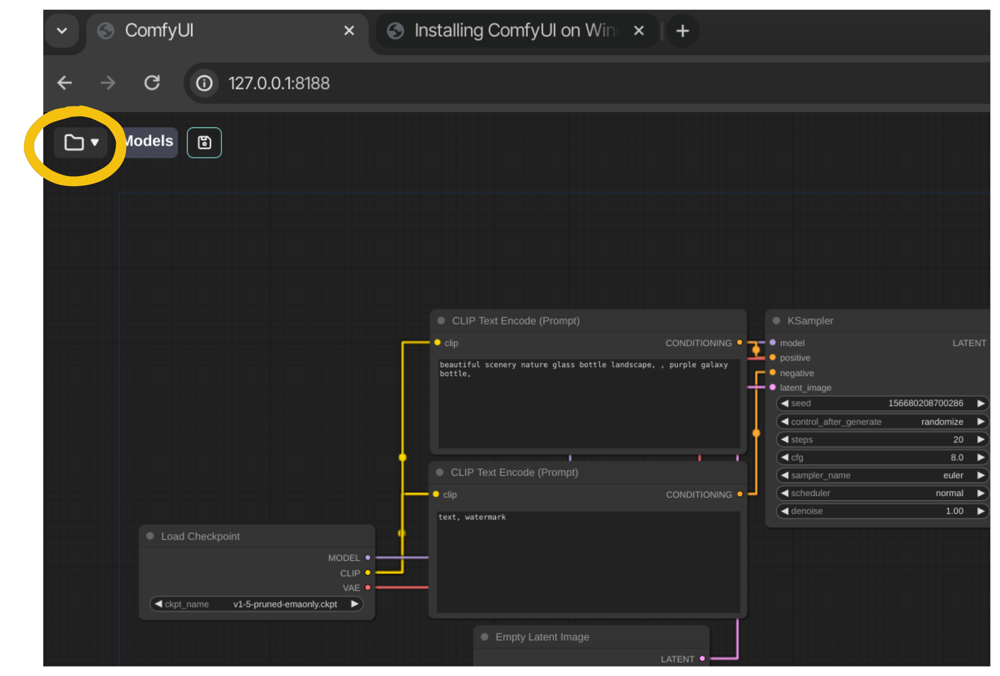
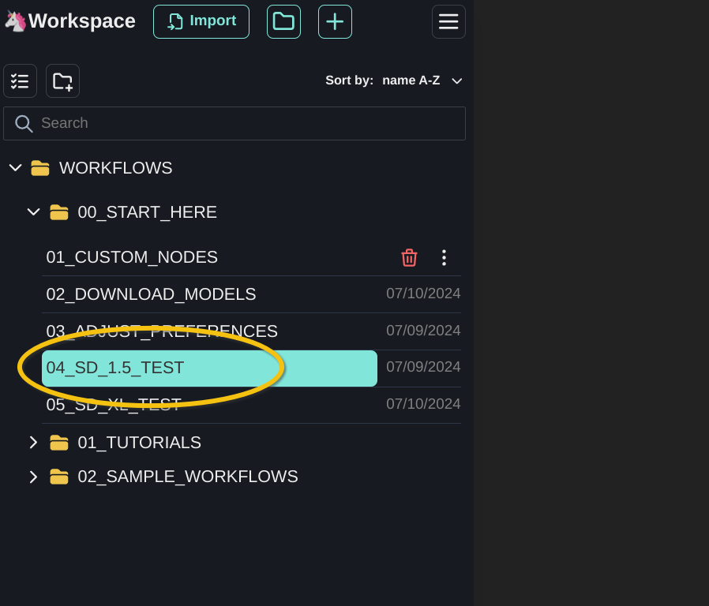
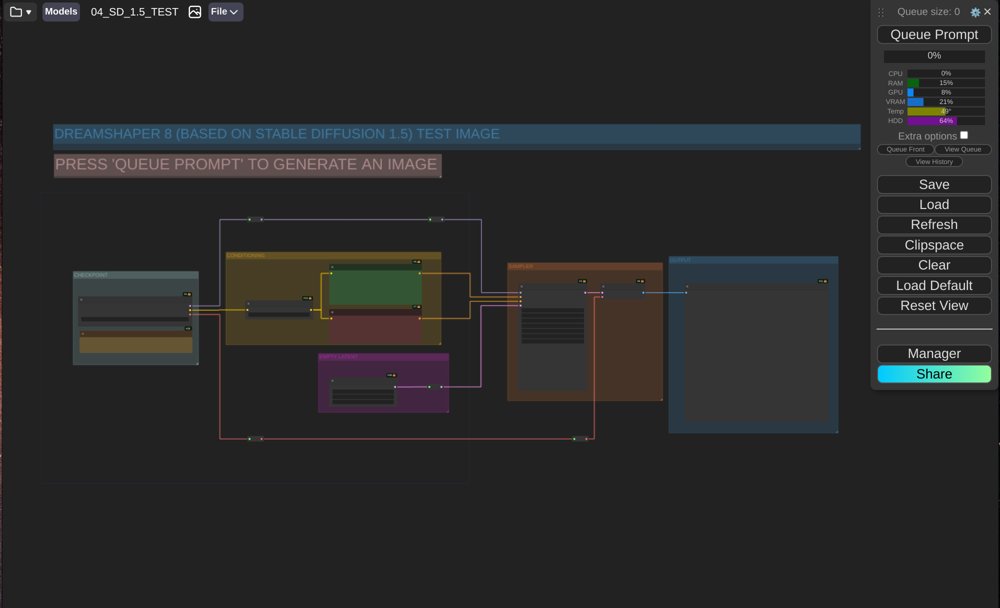
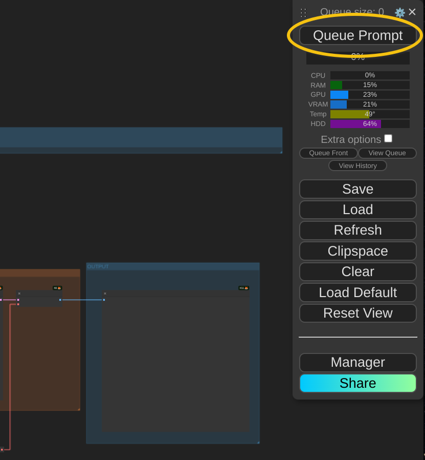
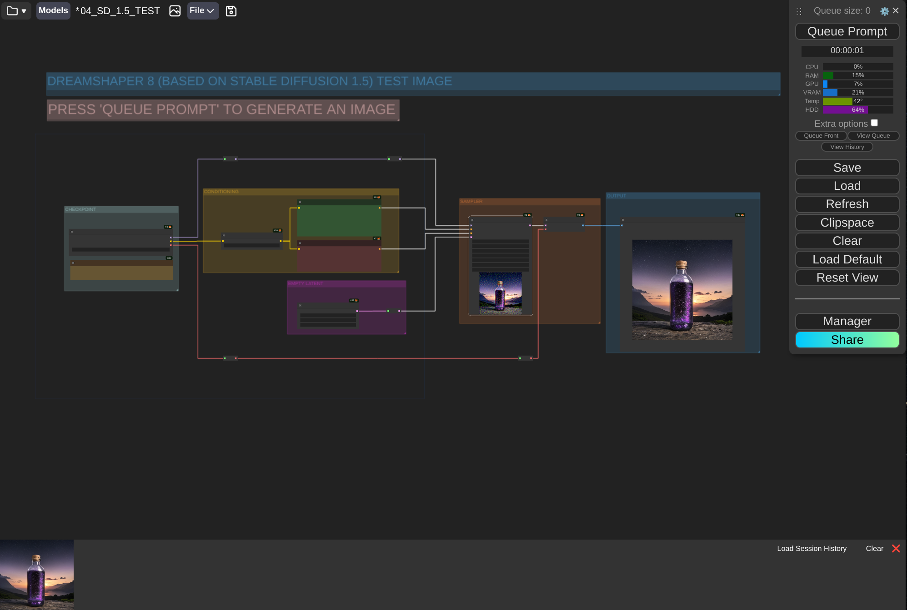
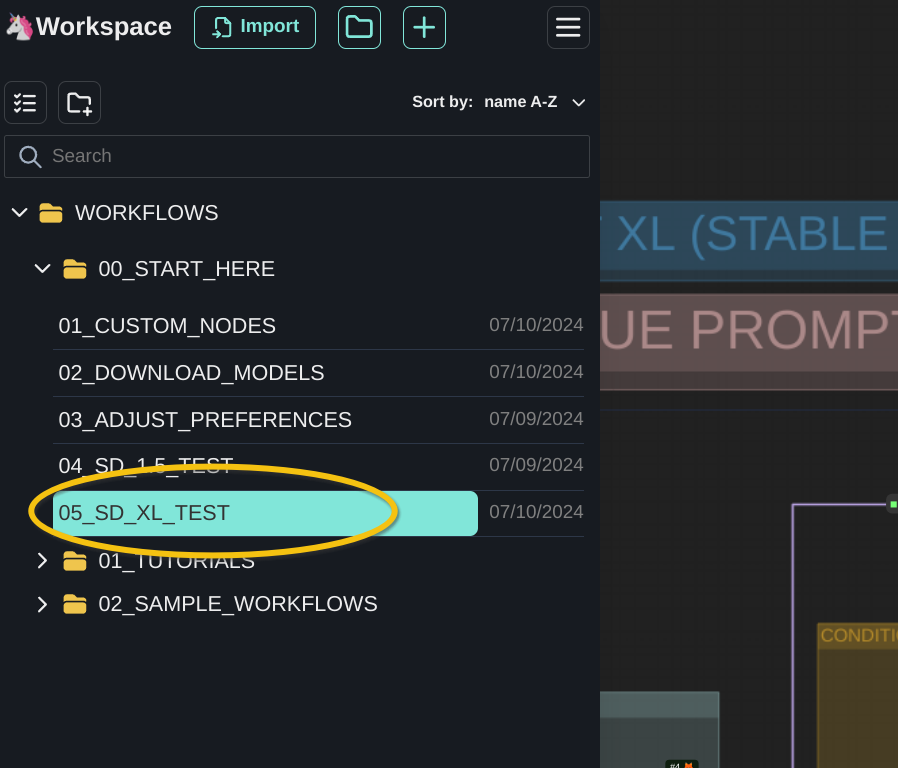
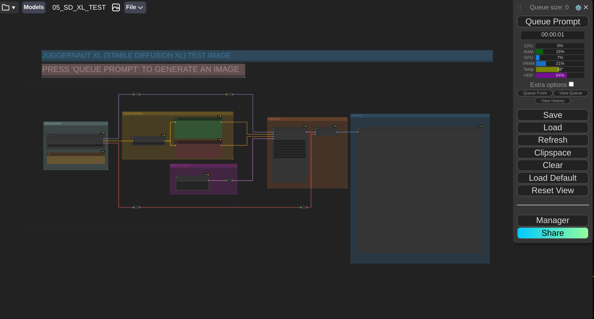
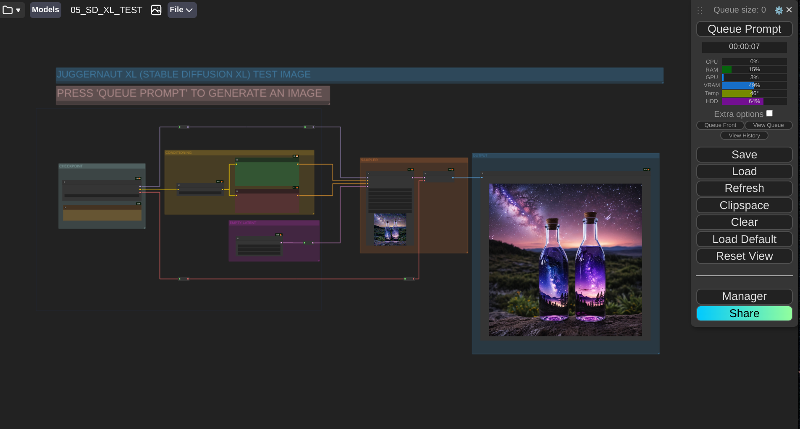

To make sure our ComfyUI installation is working as intended, we will generate two images using text prompts:
- An image using a Stable Diffusion 1.5 based checkpoint (Dreamshaper 8).
- An image using a Stable Diffusion XL based checkpoint (Juggernaut XL Lightning).
This document will guide on how to generate these images.
OPEN COMFYSPACEComfyspace Toolbar -> Folder icon. |  |
OPEN THE SD 1.5 TEST WORKFLOWWORKFLOWS -> 00_START_HERE -> 04_SD_1.5_TEST. |  |
The Dreamshaper 8 / Stable Diffusion 1.5 demo workflow opens. 
GENERATE AN IMAGEPress Queue Prompt or
|  |
After a moment, ComfyUI generates an image using the Dreamshaper 8 checkpoint. 
If you cannot generate an image, make sure that the Dreashaper 8 checkpoint is installed here:
ComfyUI/models/checkpoints/SD15/DreamShaper_8_pruned.safetensors
OPEN WORKSPACE MANAGERWorkspace Toolbar -> Folder icon. |
OPEN THE SDXL TEST WORKFLOWWORKFLOWS -> START_HERE -> 05_SD_XL_TEST. |  |
The Juggernaut 9 XL Lightning / Stable Diffusion XL demo workflow opens. 
GENERATE AN IMAGEPress Queue Prompt or
|
After a moment, ComfyUI generates an image using the Juggernaut 9 XL Lightning checkpoint. 
If you cannot generate an image, make sure that the Juggernaut 9 XL Lightning checkpoint is installed here:
ComfyUI/models/checkpoints/SDXL/lightning/juggernautXL_v9Rdphoto2Lightning.safetensors
Yes, I was able to generate images!
Congratulations! You have completed your ComfyUI installation.
You are now ready to begin the live class. See you soon!